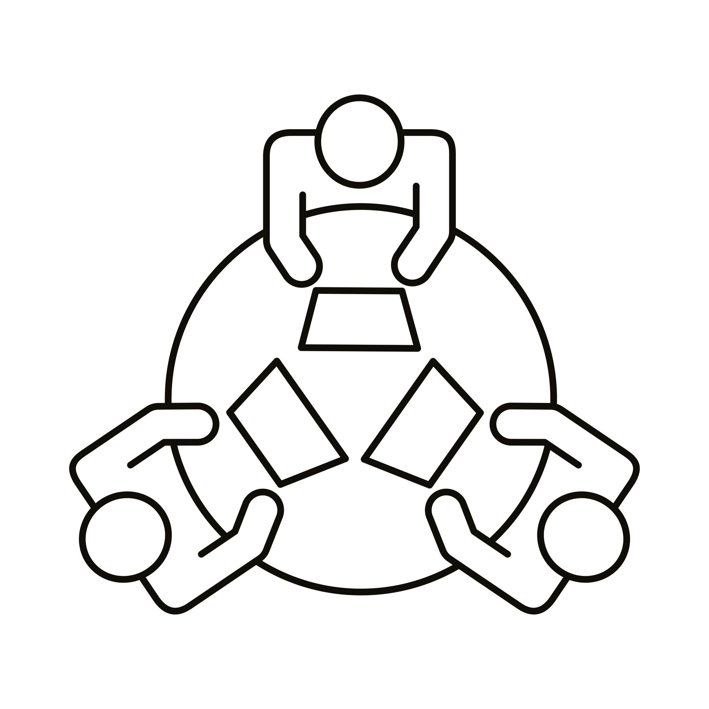

Nous sommes un groupe de trois étudiants du master 1 MIASHS
(Mathématiques et Informatique Appliquées aux Sciences Humaines et Sociales"), formé à l'occasion du Marathon du web afin de répondre au mieux à la
problématique qui nous a été proposée.
Ainsi notre solution a été pensée et mise en place sur ce site qui regroupe les résultats de nos travaux.
Ainsi notre solution a été pensée et mise en place sur ce site qui regroupe les résultats de nos travaux.
- François VERDELHAN
- Thao Lê
- Shelmy ASSIAH
Pour plus d'informations vous pouvez vous rendre sur le site principal de Compost+ en cliquant
ici